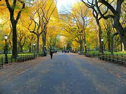
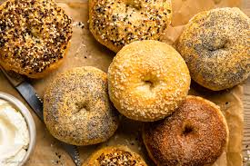

Top Tourist Spots
- Statue of Liberty
- Central Park 
- Times Square
- Niagara Falls

Famous Foods
| Food | Description |
|---|---|
New York Pizza

|
Thin crust pizza with delicious toppings. |
| Bagels  | Soft, chewy bagels often served with cream cheese. |
Cheesecake

|
Rich and creamy dessert originally from NYC. |
Culture & Festivals
New York City is a diverse "melting pot" of many different cultures, which makes its festivals exciting and varied. The city loves to celebrate its global roots through a huge number of events. You can see this at the big parades like the lively West Indian-American parade, the colorful Lunar New Year event in Chinatown, and the traditional Feast of San Gennaro in Little Italy. The city also hosts world-famous events everyone knows , such as the Macy's Thanksgiving Day Parade, the famous New Year's Eve ball drop in Times Square, and the creative Village Halloween Parade. New York's culture is also found in its many museums, famous Broadway shows, delicious food from around the world, and constant street fairs, making it a truly global and exciting place to live and visit.